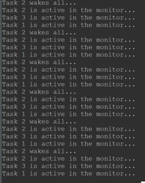

| This document is a high-level system description. API details can be found at the project repository. |
The kernel on a glance
1. A real-time executive
If no more details are to be provided the kernel has a top and a bottom layer - on the top, the Executive manages the resources needed by the application; on the bottom, the Low-level Scheduler works as a software extension of the CPU.
Together they implement the Task concept and provide the primitives for a programmable multitasking environment.
A process is composed by an execution image and an address space. A thread is a logical sequence of instructions. Several threads co-exist in the same address space, within the same process.
|
Embedded Kernel Dysphoria. The misguided belief that a single (physical) address space running clueless threads can somehow mimic a GPOS—and that doing so is desirable for embedded system software. |
On the embedded realm, probably because we lack a better abstraction, we use multithreading to fine-tune our load balance, and therefore the responsiveness to achieve real-time.
This is an arrangement: instead of having a single super-loop, we have many - each one running on its own execution stack.
This arrangement yields an operating system entitity to handle - a (logical) Execution Unit: in K0 we name it a Task (the terms task and thread are used interchangeably on this document.)
The K0 multitasking engine is wired to a single process on a single address space - as the majority of small kernels you see around (regardless the claims of being micro, nano or pico kernels).
Importantly, there is no userland on the strict sense. Low-end MCUs based on the supported architecture (ARMv7M) often do not come with a Memory Protection Unit - so privilege levels are limited to the CPU scope: instructions and registers. This level of safety does not compensate for the overhead of system calls, as they harm determinism and responsiveness.
Core Mechanisms
In this section a high-level description of the kernel core mechanisms is provided. These mechanisms are always present: scheduler, timers and memory allocator.
1. Data Structures
1.1. Task Control Block
Threads are represented as Tasks. Every task is associated to a Task Control Block structure. This is a record for stack, resources and time management:
| Task Control Block |
|---|
Task name |
Saved Stack Pointer |
Stack Adddress |
Stack Size |
Status (ready, running, sending…) |
Assigned Priority |
Current Priority |
User Assigned ID |
Kernel Assigned ID |
Time-Slice |
Remaining time-slice |
Last wake-time |
Flags: run-to-completion, timed-out, yielded |
Pending resources: semaphores, mutexes, timers, message passing, etc. |
Monitoring: dispatch counter, lost signals, number of preemptions, preempted by |
Aggregated list node |
Tasks are static - they cannot be created on runtime, to be destroyed, to fork or join.
On practice, tasks are either running or waiting for its turn to run. When there is no blocking condition, we say a task is READY - it is just waiting for the scheduler. When there is a blocking condition the task is WAITING. A tasks needs to be READY to be picked up by the kernel scheduler and switch to RUNNING.

We extend the WAITING state logically as:
-
PENDING : the task suspended itself waiting for a direct signal.
-
SUSPENDED: the task has been suspended by another task, and will switch to READY when signalled.
-
SLEEPING: a task is normally sleeping for an event. This is a broad concept we explore a bit later.
-
BLOCKED: a task is blocked on a critical region, when trying to access a busy resource.
-
SENDING/RECEIVING: same as blocked, but the busy resource is a kernel object for message passing (or similar) mechanism.
1.1.1. Task Queues
The backbone of the queues where tasks will wait for its turn to run is a circular doubly linked list: removing any item from a doubly list takes O(1) (provided we don’t need to search the item). As the kernel is aware of each task’s address, adding and removing is always O(1). Singly linked lists, can’t achieve O(1) for removal in any case.
A circular doubly linked-list ADT is employed:
HEAD TAIL
_____ _____ _____ _____ _____
| |-->| |-->| |-->| |--> <--| |
|DUMMY| | H | | H+1 | | H+2 | . . . | T |
<-|_____|<--|_____|<--|_____|<--|_____| |_____|-->
|________________________________________________________|
- INITIALISE
The list is initialised by declaring a node, and assigning its previous
and next pointers to itself. This is the anchored reference.
_____
__|__ |
| |-->
|DUMMY|
<-|_____|
|____|
- INSERT AFTER
When list is empty we are inserting the head (that is also the tail).
If not empty:
To insert on the head, reference node is the dummy.
To insert on the tail, reference node is the current tail
(dummy's previous node).
_____ _____ _____
| ref |-> | new |-> | old |->
. .| | |next | | next| . . .
<-|_____| <-|_____| <-|_____|
- REMOVE A NODE
To remove a node we "cut off" its next and previous links, rearranging
as: node.prev.next = node.next; node.next.prev = node.prev;
_______________
_____ | _____ ___|_
| |-> | x | |->
. . .|prev | |node | | next| . . .
<-|_____| x_____| <-|_____|
|______________|
To remove the head, we remove the dummy's next node
To remove the tail, we remove the dummy's previous node
In both cases, the list adjusts itselfThus, comes another design choice towards achieving O(1). The global ready queue is a table of FIFO queues—each queue dedicated to a priority—and not a single ordered queue. So, enqueuing a ready task is always O(1). If tasks were placed on a single ready queue, the time complexity would be O(n), given the sorting needed.
1.2. The scheduling algorithm
It goes like this: as the ready queue table is indexed by priority - the index 0 points to the queue of ready tasks with priority 0, and so forth, and there are 32 possible priorities - a 32-bit integer can represent the state of the ready queue table. It is a BITMAP:
The BITMAP computation: ((1a) OR (1b)) AND (2), s.t.:
(1a) Every Time a task is readied, update: BITMAP |= (1U << task->priority );
(1b) Every Time an empty READY QUEUE becomes non-empty, update: BITMAP |= (1U << queueIndex)
(2): Every Time READY QUEUE becomes empty, update: BITMAP &= ~(1U << queueIndex);
EXAMPLE:
Ready Queue Index : (6)5 4 3 2 1 0
Not empty : 1 1 1 0 0 1 0
------------->
(LOW) Effective Priority (HIGH)
In this case, the scenario is a system with 7 priority task levels. Queues with priorities 6, 5, 4, and 1 are not empty.The idle task priority is assigned by the kernel, during initialisation taking into account all priorities the system programmer has defined. Unless user-tasks are occupying all 32 piorities, the Idle Task is treated as an ordinary lowest-priority and has a position in the queue. If not, the idle task on practice will have no queue position, and will be selected when the BITMAP is 0. In the above bitmap, the idletask is in readyQueue[6].
Given this mask, we know that we shall start inspecting on the LSBit and stop when the first 1 is found. There are uncountable manners of doing this. The approach I chose is:
(1) Isolate the rightmost '1':
RBITMAP = BITMAP & -BITMAP. (- is the bitwise operator for two's complement: ~BITMAP + 1) `In this case:
[31] [0] : Bit Position
0...1110010 : BITMAP
1...0001110 : -BITMAP
=============
0...0000010 : RBITMAP
[1]The rationale here is that, for a number N, its 2’s complement -N, flips all bits - except the rightmost '1' (by adding '1') . Then, N & -N results in a word with all 0-bits except for the less significant '1'.
(2) Extract rightmost '1' position:
Within GCC, the builtin_ctz() function does the trick: it returns the number of trailing 0-bits within an integer, starting from the LSbit. The number of 'trailing zeroes' equals the position where the first '1' is found, that is also the ready queue index (and hence the priority) of the next task to be dispatched.
Using ARMv7M instructions, a possible solution is to use the CLZ (count lead zeros):
.global __getReadyPrio
.type __getReadyPrio, %function
.thumb_func
__getReadyPrio:
CLZ R12, R0
MOV R0, R12
NEG R0, R0
ADD R0, #31
BX LRThus, we subtract 31 from the number of leading zeroes, and get the index.
The source code in K0BA looks like:
static inline PRIO kCalcNextTaskPrio_()
{
if (readyQBitMask == 0U)
{
return (idleTaskPrio);
}
readyQRightMask = readyQBitMask & -readyQBitMask;
PRIO prioVal = (PRIO) (__getReadyPrio(readyQRightMask));
return (prioVal);
// or GCC builtin (more portable)
//return (PRIO)(__builtin_ctz(readyQRightMask));
}
VOID kSchSwtch(VOID)
{
nextTaskPrio = calcNextTaskPrio_();
K_TCB* nextRunPtr = NULL;
K_ERR err = kTCBQDeq( &readyQueue[nextTaskPrio], &nextRunPtr);
if ((nextRunPtr == NULL) || (err != K_SUCCESS))
{
kErrHandler(FAULT_READYQ);
}
runPtr = nextRunPtr;
}1.3. Scheduler Determinism
1.3.1. Preemptive Scheduling
This is a simple test to establish some evidence the scheduler obeys the preemption criteria: a higher priority task always preempts a lower priority task.
Task1, 2, 3, 4 are in descending order of priority. If the scheduler is well-behaved, we shall see counters differing by "1".
volatile UINT32 counter1;
volatile UINT32 counter2;
volatile UINT32 counter3;
volatile UINT32 counter4;
VOID Task1(VOID)
{
while(1)
{
counter1++;
kPend();
}
}
VOID Task2(VOID)
{
while(1)
{
counter2++;
kSignal(1); /* shall immediately be preempted by task1 */
kPend(); /* suspends again */
}
}
VOID Task3(VOID)
{
while(1)
{
counter3++;
kSignal(2); /* shall immediately be preempted by task2 */
kPend(); /* suspends again */
}
}
VOID Task4(VOID)
{
while(1)
{
counter4++;
kSignal(3); /* shall immediately be preempted by task3 */
/* as the lowest priority task it will only be resumed
after all higher priority tasks are suspended */
}
}This is the output after some time running:

In the above example we have uses direct signals. Using semaphores:
K_SEMA sema1;
K_SEMA sema2;
K_SEMA sema3;
K_SEMA sema4;
VOID kApplicationInit(VOID)
{
kSemaInit(&sema1, 0);
kSemaInit(&sema2, 0);
kSemaInit(&sema3, 0);
kSemaInit(&sema4, 0);
}
VOID Task1(VOID)
{
while (1)
{
counter1++;
kSemaWait(&sema1, K_WAIT_FOREVER);
}
}
VOID Task2(VOID)
{
while (1)
{
counter2++;
kSemaSignal(&sema1);
kSemaWait(&sema2, K_WAIT_FOREVER);
}
}
VOID Task3(VOID)
{
while (1)
{
counter3++;
kSemaSignal(&sema2);
kSemaWait(&sema3, K_WAIT_FOREVER);
}
}
VOID Task4(VOID)
{
while (1)
{
counter4++;
kSemaSignal(&sema3);
}
}
Here tick is running @ 1ms (1KHz)
1.3.2. Cooperative Scheduling
If we set all tasks at the same priority and every tasks yields the processsor, they will run on a round-robin fashion, one after another. So, every time we pause chances are we will be "somewhere in the middle" of a round.
If every task increases a counter before yielding what we expect to see is a set of counters on a fashion {K, K, K, K-1, K-1, K-1}. Importantly a counter will not offset another by more than 1 if the scheduler is deterministic.
/* All tasks have the same priority */
VOID Task1(VOID)
{
while (1)
{
count1 += 1;
kYield();
}
}
VOID Task2(VOID)
{
while (1)
{
count2 += 1;
kYield();
}
}
VOID Task3(VOID)
{
while (1)
{
count3 += 1;
kYield();
}
}
VOID Task4(VOID)
{
while (1)
{
count4 += 1;
kYield();
}
}
VOID Task5(VOID)
{
while (1)
{
count5 += 1;
kYield();
}
}The picture below show the results after ~ 13 million rounds.

1.4. Common scheduling pitfalls
To avoid the most common pitfalls when scheduling tasks the system programmer should be aware that:
-
The scheduler behaviour is to choose the highest priority READY task to run. Always.
-
A task must switch to READY state before being eligible for scheduling. If no time slice is enabled, the only way a task will switch from RUNNING to READY is by yielding. Otherwise it can only go from RUNNING to WAITING (equivalent to) and, eventually, to READY.
-
So with no time-slice and no blocking conditions you must yield() or sleep(ticks) at the end of a task loop.
-
Even if all tasks have the same priority, for round-robin a switching trigger might happen - yield, time-slice due, waiting.
-
A time slice is not a burst. A higher priority task when ready will pause a lower priority task in the middle of its time slice. So a time-slice can be split on several RUNNING states.
-
Make sure the number of tasks and the highest (lowest effective) assigned priority is correct in
kconfig.h. If wrong, the scheduler might not run one or more tasks or hard fault when switching.
2. Timers
2.1. Task Delays
The primitive sleep(t) suspends a task on a SLEEPING state, for t ticks starting to count when called.
For periodic activations, use sleepuntil(p) in which p is an absolute suspension period of time in ticks. The kernel adjusts any time drift/jitters that might happen in-between calls. If time-slice scheduler is enabled, this primitive is not available.
To busy-wait (active delay within a task) you can use the busy(t) primitive.
2.2. Application Timers
| Time Control Block |
|---|
Mode: Reload/OneShot |
Callout Function |
Callout Arguments |
Timeout |
Current Delta Tick |
Next Timer Address |
K0 offers two types of application timers - one-shot and auto-reload. Both have the system tick as the time reference and are countdown timers.
The system programmer needs to be aware that the callout will run within a deferred handler, that is a run-to-completion system-task.
|
Application timer callouts cannot use blocking primitives. |
One-shot timers that are within a task loop will naturally be activated periodically. A remark is that timers leverage a delta queue. Suppose you have a set of timers T1, T2, T3. They will countdown from 8, 6 and 10 ticks, respectively. For a regular queue, the node sequence is RQ = <(T1, 8), (T2, 6), (T3, 10)> (at tick=0). The delta queue would have pairs ordered as a sequence (tick=0): DQ = <(T2, 6), (T1, 2), (T3, 2)>. So having to decrease only the list head for any amount of timers, yields O(1) time-complexity within the interrupt handler.
3. Memory Allocator
| Memory Allocator Control Block |
|---|
Associated Block Pool |
Number of Blocks |
Block Size |
Number of Free Blocks |
Free Block List |
Bear in mind that the standard malloc() leads to fragmentation and (also, because of that) is highly undeterministic. Unless we are using it once - to allocate memory before starting up, it doesn’t fit. But often we need to 'multiplex' memory amongst tasks over time, that is to dynamic allocate and deallocate.
To avoid fragmentation we use fixed-size memory blocks. A simple approach would be a static table marking each block either as free or taken. With this pattern you will need to 'search' for the next available block, if any - the time for searching changes - what is indeterministic.
A suitable approach is to keep track of what is free using a linked list of addresses - a dynamic table. We use "meta-data" to initialise the linked-list - every address holds the "next" address value.
This approach limits that the minimal size of a block is the size of a memory address - 32-bit for our supported architecture. Yet, this is the cheapest way to store meta-data. If not storing on the empty address itself, an extra 32-bit variable would be needed to each block, so it could have a size that is less than 32-bit.
When a routine calls alloc() the address to be returned is the one free list is pointing to, say addr1. Before, we update free list to point to the value stored within addr1, say addr8.
When a routine calls free(addr1), we overwrite whatever has been written in addr1 with the value freelist points to (if no more alloc() were issued, it still is addr8), and addr1 is the freelist head again.
A major hazard is having a routine writing to non-allocated memory within a pool, as it will spoil the meta-data.
3.1. Memory Allocator Determinism
The memory allocator (if well employed) shall never fail, besides it might take the same amount of time to allocate and to free a block. In the test below, three tasks with same priority are allocating, increasing a counter, and freeing a single block of 128 bytes. If the allocator exhibits deterministic behaviour, these counters might differ at most by 1 whenever we pause the device.
#include "application.h"
INT stack1[STACKSIZE];
INT stack2[STACKSIZE];
INT stack3[STACKSIZE];
K_MEM bufPool;
#define BLOCK_SIZE 128
#define N_BLOCKS 3
BYTE buf[N_BLOCKS][BLOCK_SIZE];
VOID kApplicationInit(VOID)
{
kMemInit(&bufPool, buf, BLOCK_SIZE, N_BLOCKS);
}
volatile int counter1, counter2, counter3=0;
VOID Task1(VOID)
{
while (1)
{
BYTE* addr = kMemAlloc(&bufPool);
assert(addr!=NULL);
K_ERR err = kMemFree(&bufPool, addr);
assert(err==0);
counter1++;
kYield();
}
}
VOID Task2(VOID)
{
while (1)
{
BYTE* addr = kMemAlloc(&bufPool);
assert(addr!=NULL);
K_ERR err = kMemFree(&bufPool, addr);
assert(err==0);
counter2++;
kYield();
}
}
VOID Task3(VOID)
{
while (1)
{
BYTE* addr = kMemAlloc(&bufPool);
assert(addr!=NULL);
K_ERR err = kMemFree(&bufPool, addr);
assert(err==0);
counter3++;
kYield();
}
}Below the results after ~2.5 million ticks of 1 ms.

|
Zero-cost wishful thinking. The idea that bad abstractions are better than no abstractions. |
Inter-task communication (ITC)
In this section a high-level description of the mechanisms used for communication between tasks is presented.
Tasks coordination (synchronisation)
K0 handles synchronisation using direct signals, semaphores and sleep/wake-up. Mutexes with priority inheritance are for locking critical regions. The provided mechanisms are enough to create more elaborated schemes, such as condition variables and event groups.
Except for Direct Signals that cannot be disabled, all other synchronisation components are optional.
Message Passing
In real-time applications, Message Passing often encounters the following scenarios:
-
Some messages are consumed by tasks that can’t do anything before processing a information - thus, these messages end up also being signals. E.g.: a server that needs a command to process, or a client that blocks for an answer.
-
Two tasks with different rates need to communicate data - a faster producer might use a buffer to accomodate a relative small burst of generated data, or a faster consumer will drop replicated received data.
-
Other times, we might need correlate data with time for processing, so, using a queue gives us the idea of data motion. Eg., when calculating the mean value of a transductor on a given period.
-
On the other hand, for some tasks past data is useless - they need the most recent data for processing - e.g., a drive-by-wire mechanism is interested in the most recent data during its operation.
All these cases are covered by K0 with the mechanisms of Mailboxes, Message Streams and Cyclical Asynchronous Buffers.
These mechanisms are highly modular and do not depend on synchronisation primitives.
1. Events
| Event Control Block |
|---|
Event ID (self-assigned) |
Sleeping Queue |
Timeout |
An event is a condition in time that will trigger a reaction: a countdown timer reaching zero, or the 7th bit of the 7th received stream on the 7th pin in the 7th fullmoon night in the 7th year of system uptime - being 0. These are 2 events. The reactions we don’t bother, it can even be 'to ignore the event'.
Events are pure signals - they are either absent or present, and we don’t have the notion of time duration for an event. General nomenclature for methods that will check for an event might be sleep(), wait() or pend(). For notifying the existence of an event, methods are commonly labeled with signal(), post() or wake().
The actual behaviour depends on the system and the mechanism.
K0 has a not so common abstraction for a general event, labeled just Event. The primitives are sleep(), signal() and wake().
An event object is a data structure that contains a self-assigned ID and a waiting queue - nothing else.
On purpose, there is nothing to record if an event has happened. Therefore, a sleep() always results on a task suspending on SLEEPING state. In K0 tasks sleep() for an event that is going to happen.
A wake() affects all tasks that are sleeping for an event. All switch to READY at once. On the other hand, a signal() will dequeue a single task. Queue discipline is by priority.
2. Direct Signals
Direct Signals are the simplest signalling mechanism in K0. As some tasks are entirely reactive and have a single responsibility, it is cheaper and faster to allow them to pend themselves - and be signalled without an associated kernel object or event identification at all.
The signal(id) primitive takes a Task ID as a parameter. The pend() primitive takes no parameters, acts on the caller task. There is also no need for a queue, just the status switches to PENDING.
If a task is signalled when not pending, the error counter "lostSignals" is increased in its task control block.
The main use case is for deferred handlers. This mechanism is justified by the negligible cost, the considerable efficiency, plus the ubiquity of single-purpose event-driven tasks, that sit idle until notified. After signalled, a task is placed on the ready queue and left for the scheduler do its job.
3. Counter Semaphores
| Semaphore Control Block |
|---|
Signed Counter |
Waiting Queue |
Timeout |
A counter semaphore is an event counter. It means the primitives signal() and wait() will increase and decrease, respectively, the signed value 'N' of a given semaphore (a semaphore cannot be initialised with a negative value).
When wait() results in a negative value, the caller will be blocked within the semaphore queue. The negative value of a counter semaphore inform us straight away how many tasks are blocked waiting for a signal.
After becoming negative, every signal issued to a semaphore releases a task, until its counter reaches 0 - meaning there are no enqueued tasks, and also, no events.
In K0BA, tasks block and resume within a semaphore-guarded region, either Priority or FIFO discipline (that is configured in kconfig.h ).
A special case of counter semaphores is a binary semaphore that assumes the values 1 or 0. K0 does not have dedicated structure for binary semaphores.
4. Mutex
| Mutex Control Block |
|---|
Locked state |
Owner |
Waiting Queue |
Timeout |
Mutexes are solely for mutual exclusion they cannot be used for signalling. A mutex is a lock with a notion of ownership: only the task that owns a mutex can unlock it.
If a task that is not an owner tries to lock it, it switches to a BLOCKED state, until the mutex is unlocked - as on semaphores. But, different from semaphores, the complementary operation - unlock() - when issued by a not-owner has undefined behaviour. In K0 it will hard fault.
Semaphores are more suitable for signalling; for resource sharing it will probably be fine if all tasks have the same priority - if not, there is a drawback explained below.
|
Combining Events with mutexes is a means of creating Condition Variables and therefore, Monitor-like constructs. |
4.1. Priority Inversion
Let TH, TM, TL to be 3 tasks with priority high (H), medium (M) and low (L) respectively. Say TH is dispatched, just to be blocked on a semaphore 'TL' has acquired. Say 'TM' is dispatched and it does not need the resource 'TL' holds. It will preempt 'TL'.
That is to say 'TH' has an unbounded waiting time because any task with priority higher than 'L' that do not need the resource is indirectly preventing it to be unblocked.
Mutexes in K0 implement a protocol called priority inheritance - 'TL' will have its priority raised to the same as 'H', while holding the resource, so 'TM' cannot preempt it anymore. Thus, consider using mutexes for resource sharing whenever possible.
|
If sharing resources with semaphores, carefully prioritising the tasks; establishing a time-out for |
Producer-consumer problem
A classic synchronisation pattern is the producer-consumer for a bounded buffer.
At first sight it is odd that on textbooks the generic pattern starts with the consumer sending to the producer "N empty buffers". We need a mechanism to tell the producer that there is room to place an item. On the beginning all buffers are empty, so in code it can be represented as a counter semaphore initialised to N. Besides, the producer needs to tell the consumer an item is available. Another semaphore is used. To avoid racing conditions, we need some sort of mutual exclusion.
#define N 10 /* bounded to 10 items */
FIFO buffer[N];
SEMA empty; /* init 10 */
SEMA item; /* ini 0 */
MUTEX mutex; /* init unlock */
{
produce_item();
wait(&empty);
lock(&mutex);
insert_item(&buffer);
unlock(&mutex);
signal(&item);
}
consumer_task()
{
wait(&item);
lock(&mutex);
retrieve_item(&buffer);
unlock(&mutex);
signal(&empty);
}5. Remarks on synchronisation services
5.1. Waiting queue discipline
For blocking mechanisms it is normally possible to choose either having tasks enqueued by priority or on a FIFO basis. It is suggested to keep it by priority to be coherent with the scheduler policy and diminish the risk of priority inversions when interacting over public resources. If noticing tasks starving, raising its priority temporarily is an option.
5.2. Installed callbacks for signals
It is tempting to become UNIX-minded and install callbacks on signals. When resuming, a task first checks for any pending signals. If they exist, the task deviates from its normal flow (as within any software interrupt), runs the callback, and deals with any side effects. The overhead is excessive—both in time and space—a need to reserve a space on the stack or provide a stack for the callback; a need to tune the context-switching to happen when there is a signal pending and to get back to the deviated point.
5.3. Time-out on blocking primitives
Blocking primitives within K0BA have a timeout parameter, given in ticks. Only pend() does not given its logical simplistic nature, and application. If the task cannot perform access to a resource within a time given in system ticks, it will switch back to READY, eventually be dispatched, and force a return K_ERR_TIMEOUT .
5.4. Event Groups (multi-condition synchronisation)
As on VER0.3.1 the decision is not to provide event groups as another abstraction. The ways to leverage multicondition synchronisation are too many, there is no 'enough' abstraction. The current mechanisms when combined can provide multicondition synchronisation in the form of Monitors, Condition Variables, Event Groups and Flags, etc., as demonstrated on the usage patterns at the end of this document.
6. Mailboxes
While in GPOS jargon mailboxes are queues of messages - as a distinction from pipes (that are stream buffers) - in embedded system software, often mailboxes are said to have a capacity of a a single item, and more recently you will not find it as a distinct mechanism - you use a 1-item queue.
In K0BA, a Mailbox is a shared memory protocol. The kernel can be configured to have one type of mailbox: single-item, an Exchange; or multi-item, a Queue.
| Mailbox Control Block (Exchange) |
|---|
Mail Address |
Waiting queue |
Timeout |
| Mailbox Control Block (Queue) |
|---|
Queue Address |
Write Position |
Read Position |
Max. number of mails |
Current number of mails |
Waiting queue |
Timeout |
The basic primitives for Mailboxes are post() and pend().
An Exchange will be EMPTY when the current mail address is NULL; otherwhise it is FULL.
A Queue keeps track of the number of items to switch to FULL or EMPTY.
|
Exchanges are to Queues as binary semaphores are to counter semaphores. Indeed, some RTOSes implement semaphores using mailboxes. |
For any Mailbox the following is true:
-
The mail concrete type is application-defined and sender and receiver must agree on its implementation.
-
When a producer
post()to aFULLmailbox, it (optionally) blocks and is enqueued on the Mailbox waiting queue. The associated task will switch to stateSENDING. -
Likewise, a consumer (optionally) blocks when issuing a
pend()on an empty Mailbox. Task status switches toRECEIVINGand it is enqueued on the mailbox waiting queue. -
The waiting queue for a Mailbox, has a discipline that can either be priority or FIFO. Default is by priority, to be coherent with the scheduler.
|
Enqueuing pointers is error prone - while a single-item mailbox makes it easier, for queues a safe approach is to use an allocator: pair |
Both Queues and Exchanges have a peek() primitive to retrieve the item on the head (or, the only item for Exchanges) without extracting it - and for queues, there is the jam() primitive to place an item on the head - as an urgent data.
For Exchanges there an optional primitive postpend() - to post a message and wait for an answer on an indicated storage, making it straight for synchronous command-response (or "extended rendezvous").
Exchanges are reasonably faster than 1-item queues and half of the size. Choosing to have Mailboxes either as Exchanges or as Queues depends on the application demand. Exchanges are meant to be used as a "data-as-signal" mechanism. Mailboxes are very flexible and two usage variations are as follows.
The snippet below shows a Mailbox Queue used for message passing of data structure (size = 16 bytes), using the allocator.
Note the receiver does not copy the message to its address, the scope of the message is managed by allocating a different address for every post(). When there are no more buffers the sender yields. The receiver role is to deallocated after a pend(). This guarantees the message scope.
struct mesg
{
UINT key;
CHAR mesg[12];
};
#define N_MESG 8
#define MESG_SIZE sizeof(struct mesg)
BYTE mesgPool[N_MESG][MESG_SIZE]; /* pool of mesg buffers */
ADDR mboxBuf[8]; /* to store addresses */
K_MEM mem; /* allocator */
K_MBOX mbox; /* mailbox queue */
/* for testbench */
CHAR *messages[8] =
{ "Message 0", "Message 1", "Message 2", "Message 3", "Message 4", "Message 5",
"Message 6", "Message 7" };
VOID kApplicationInit(VOID)
{
/* init allocator */
kMemInit(&mem, (ADDR) mesgPool, MESG_SIZE, N_MESG);
/* init mailbox */
kMboxInit(&mbox, mboxBuf, 8);
}
VOID Task1(VOID)
{
UINT i = 0;
struct mesg *sendPtr;
while (1)
{
/* allocate buffer */
sendPtr = NULL;
sendPtr = (struct mesg*) kMemAlloc(&mem);
if (sendPtr != NULL)
{
sendPtr->key = i;
ULONG mesgLen = kStrLen(messages[i]);
ULONG r = kMemCpy(sendPtr->mesg, messages[i], mesgLen);
assert(r > 0);
kprintf("Sending: %s \n\r", sendPtr->mesg);
kMboxPost(&mbox, sendPtr, K_WAIT_FOREVER);
i += 1;
i %= 8;
}
else
{
kYield(); /* no more buffers, yield */
}
}
}
VOID Task2(VOID)
{
struct mesg *recvPtr = NULL;
while (1)
{
kMboxPend(&mbox, (ADDR) &recvPtr, K_WAIT_FOREVER); /* will block when empty */
kprintf("Received: %s \n\r", recvPtr->mesg);
kBusyDelay(2);
kMemFree(&mem, (ADDR) recvPtr); /* free memory */
}
}
It worth mentioning, that if constrained to 4-byte messages, you can pass by copy via mailboxes by abusing casts. In the snippet below, the initial value '1' of mesg is passed as an address to the pointer, and modified before posting to the mailbox. The receiver will get a copy of the of mesg which stored on its local UINT array.
K_MBOX mbox; /* queue of mailboxes */
INT queue[8];
VOID kApplicationInit(VOID)
{
kMboxInit(&mbox, (ADDR)&queue, 8);
}
VOID SenderTask(VOID)
{
UINT mesg=1;
while(1)
{
ADDR sendPtr = (ADDR)mesg;
mesg+=1; /* mesg is modified but a copy is in sendPtr */
kMboxPost(&mbox, sendPtr, K_WAIT_FOREVER);
}
}
VOID RecvTask(VOID)
{
UINT recv[8]={0};
UINT idx=0;
while(1)
{ /*copy values received to local array by index*/
kMboxPend(&mbox, (ADDR)&recv[idx], K_WAIT_FOREVER);
idx+=1;
idx%=8;
}
/* recv[] will be {1,2,3,4,...,8,(wrap)9,2...}*/
}When data structures are to be transmited decoupling sender and receiver on both time and data-scope the Message Queue on the next section is more convenient.
7. Message Queue (Stream)
| Message Queue Control Block |
|---|
Storage address |
Write Index |
Read Index |
Message Block Size |
Max of messages |
Message Count |
Timeout |
The classic Message Queue on UNIX SVR4 is defined as the 'head of a linked-list of messages'. Some RTOSes implement Message Queues using linked-lists, and in these cases might exist a central pool of buffers. In K0 it was like this until recently.
On VER0.3.1 K0 Message Queues are a byte-stream mechanism and there is no central pool of buffers on the kernel anymore. This design avoids the overhead of a list, is faster and creates less contention by not having a shared pool. For each Message Queue the user provides a buffer address with enough capacity (number of messages x message size) that is handled as being circular.
Thus, it resembles classic (named) Pipes. The difference is that as messages have a format (application defined), they have a fixed-size. Pipes, on the other hand, transmit and receive any number of bytes on each operation.
The message size associated to a Message Queue instance is defined on its initialisation. On a transmission a deep copy of a message from the sender storage to the queue takes place; on a reception, from the queue to the receiver storage.
The important primitives for Message Queues are send(), recv(), jam() and peek().
Message Queues are ~ 3 to 4x slower than Mailbox Queues; yet they are safer.
|
You can transmit pointers through Message Queues - as 4-byte messages. But complex structures more often than not will be incomplete with shallow copies (casting back an address to a concrete pointer type). |
8. Pump-Drop Buffers
| Pump-Drop Message Control Block |
|---|
Allocator |
Most Recent Buffer Address |
| Pump-Drop Buffer |
|---|
Data Address |
Data Size |
Readers Count |
Between a message that does not arrive, and one that arrives with information that is not useful, there is no practical difference. But if a message arrives with information that will deceive your control loop to perform a wrong action - this is the worse. This is why Pump-Drop Buffers are a feature in K0BA.
Pump-Drop buffering resembles double buffering: buffers switch back and forth as write-only and read-only. It is an asynchronous method meant to be used when message queues do not fit: when the reader needs the most recent data and is up to afford loosing some data (producer is faster), or reading the same (producer is slower). It is a one-to-many channel associated to an allocator. It is essentialy the mechanism proposed on the HARTIK kernel.
Primitives for Pump-Drop Messages are:
-
For writer:
reserve()andpump(). -
For readers:
fetch()anddrop().
The semantics is as follows - remember it is one writer to many readers:
-
When the producer needs to write a new message, first it reserves a PD-buffer. This might already be allocated - if it is allocated but has readers, a new PD-buffer is allocated, to ensure data consistency.
-
Writer now appends a message to be sent (application-dependent) and pump the buffer.
-
After pumped, the PD buffer is marked as the current buffer. From now on, the former pumped PDB cannot be fetched and will eventually drop to 0 readers.
-
A reader first 'fetches' a PDB. A non-null return for a fetch will increase the readers count on the PDB.
-
After 'having' the message, a reader 'drops the PD-buffer': the kernel checks if it was the last reader and it is not the current PDB - if these two conditions are met, the buffer is deallocated. (checking it is NOT the current PDB guarantees there is already a new PDB in the circuit so readers won’t starve).
|
This mechanism guarantees the information is always updated, but no message is corrupted. The ideal pool size, thus, is simply the number of tasks + 1. |
Note the message passed is again an address. The receiver can copy the message to local a buffer, since a PD-buffer is never deallocated while in use and nev er fetched if there is a new buffer.
|
It is a good practice to keep message passing on a one-to-one fashion as much as possible. While K0 will not provide abstractions for Ports, if desiring a finer control on who can access a public message resource, the programmer can create simple methods wrapping send/receive primitives to enforce a unique task can receive from it (the resource is then a task’s Port). |
Usage Patterns
In this section some simple usage patterns are being attached. The board used to run these snippets is a Nucleo-F103RB (ARM Cortex-M3 based).
1. Monitor #0 (Barrier)
Usage: resource access/tasks coordination.
#include "application.h"
K_EVENT syncEvent; /* state event */
UINT syncCounter; /* state representation */
K_MUTEX syncMutex; /* monitor lock */
K_MUTEX resourceLock; /* if there is a resource */
#define SYNC_CONDITION (syncCounter>=3) /* needed tasks in the barrier */
VOID kApplicationInit(VOID)
{
kMutexInit(&syncMutex);
kEventInit(&syncEvent);
kMutexInit(&resourceLock);
syncCounter = 0;
}
/* only one task can be active within a monitor
they are enqueued either on the mutex or on the event
*/
static VOID synch(VOID)
{
kMutexLock(&syncMutex, K_WAIT_FOREVER);
kprintf("Task %d entered monitor...\n\r", K_RUNNING_TID);
syncCounter += 1;
if (!(SYNC_CONDITION))
{
kMutexUnlock(&syncMutex);
kEventSleep(&syncEvent, K_WAIT_FOREVER);
/*this condition does not need to be rechecked*/
kMutexLock(&resourceLock, K_WAIT_FOREVER);
kprintf("Task %d is active in the monitor...\n\r", K_RUNNING_TID);
kMutexUnlock(&resourceLock);
}
else
{
syncCounter = 0;
kprintf("Task %d frees the waiting queue. \n\r", K_RUNNING_TID);
kEventWake(&syncEvent);
kMutexUnlock(&syncMutex);
}
kprintf("Task %d leaves monitor...\n\r", K_RUNNING_TID);
}
VOID Task1(VOID)
{
while (1)
{
kSleep(5);
synch();
}
}
VOID Task2(VOID)
{
while (1)
{
kSleep(8);
synch();
}
}
VOID Task3(VOID)
{
while (1)
{
kSleep(3);
synch();
}
}
2. Monitor #1 (Turnstile)
In this variation we use mailboxes for turnstile. Also the task that wakes up all others will use the resource within the monitor (be active).
K_EVENT syncEvent; /* state event */
UINT syncCounter; /* state representation */
K_MBOX syncMbox;
K_MBOX resourceMbox;
/* keys */
UINT mayEnter = 0xAABBCCDD;
UINT mayAcquire = 0xBBCCDDEE;
UINT *acqPtr;
UINT *enterPtr;
#define SYNC_CONDITION (syncCounter>=3) /* needed tasks in the barrier */
VOID kApplicationInit(VOID)
{
kEventInit(&syncEvent);
kMboxInit(&resourceMbox, &mayAcquire);
kMboxInit(&syncMbox, &mayEnter);
syncCounter = 0;
}
static VOID synch(VOID)
{
kMboxPend(&syncMbox, (ADDR*) &enterPtr, K_WAIT_FOREVER); /*got the key*/
syncCounter += 1;
if (!(SYNC_CONDITION))
{
kMboxPost(&syncMbox, &mayEnter, K_WAIT_FOREVER);
kEventSleep(&syncEvent, K_WAIT_FOREVER);
goto ACTIVE;
}
syncCounter = 0;
kEventWake(&syncEvent);
kMboxPost(&syncMbox, &mayEnter, K_WAIT_FOREVER);
/*enter key is released*/
ACTIVE:
kMboxPend(&resourceMbox, (ADDR*) &acqPtr, K_WAIT_FOREVER);
kprintf("Task %d is active in the monitor...\n\r", K_RUNNING_TID);
kMboxPost(&resourceMbox, &mayAcquire, K_WAIT_FOREVER);
}
VOID Task1(VOID)
{
while (1)
{
kSleep(5);
synch();
}
}
VOID Task2(VOID)
{
while (1)
{
kSleep(8);
synch();
}
}
VOID Task3(VOID)
{
while (1)
{
kSleep(3);
synch();
}
}
3. Multi-condition Notification #0
Usage: coordinate a notified task action on a combination of events.
/* @file application.c */
#include "application.h"
/* waiting 4 flags to be active before going */
INT stack1[STACKSIZE];
INT stack2[STACKSIZE];
INT stack3[STACKSIZE];
typedef enum
{
TEMPERATURE = 1, HUMIDITY, CO2, FLOW
} UPDATE_t;
#define FLAG_TEMP_SENSOR_UPDATE (1U << 0)
#define FLAG_HUM_SENSOR_UPDATE (1U << 1)
#define FLAG_CO2_SENSOR_UPDATE (1U << 2)
#define FLAG_FLOW_SENSOR_UPDATE (1U << 3)
K_MBOX mbox;
/*** Init kernel objects here */
VOID kApplicationInit(VOID)
{
kMboxInit(&mbox, NULL);
}
/* this task notifies which sensors had been updated */
VOID NotifyTask(VOID)
{
UINT sendFlag = 0;
UPDATE_t updateType = 0;
while (1)
{ /* simple sum to switch sensor type */
updateType = (updateType + 1);
if (updateType > 4)
{
updateType = 1;
}
switch (updateType)
{
case (TEMPERATURE):
sendFlag = FLAG_TEMP_SENSOR_UPDATE;
break;
case (HUMIDITY):
sendFlag = FLAG_HUM_SENSOR_UPDATE;
break;
case (CO2):
sendFlag = FLAG_CO2_SENSOR_UPDATE;
break;
case (FLOW):
sendFlag = FLAG_FLOW_SENSOR_UPDATE;
break;
default:
break;
}
K_ERR err = kMboxPost(&mbox, (ADDR) &sendFlag, K_WAIT_FOREVER);
kSleepUntil(2); /* every 10ms */
}
}
/* this task stores events by OR'ing. when it matches the expected event record it expects to take an action, the storage is reset.
alternatively it could take an action whenever a single flag was active */
VOID NotifiedTask(VOID)
{
UINT *rcvdFlag = 0;
UINT wantedFlags = FLAG_TEMP_SENSOR_UPDATE | FLAG_HUM_SENSOR_UPDATE |
FLAG_CO2_SENSOR_UPDATE |
FLAG_FLOW_SENSOR_UPDATE;
UINT rcvdFlags = 0;
while (1)
{
K_ERR err = kMboxPend(&mbox, (ADDR) &rcvdFlag, K_WAIT_FOREVER);
if (err == 0)
{
rcvdFlags |= *rcvdFlag;
if (rcvdFlags == wantedFlags)
{
rcvdFlags = 0; /* clear rcvd flags */
kprintf("Task synchronized\n\r");
/* do work */
}
else
{
kprintf("Still missing a flag\n\r");
}
}
}
}
VOID Task3(VOID)
{
while (1)
{
kSleep(1);
}
}
4. Multi-condition Notification #1
Usage: multi-condition broadcast, notification, observer pattern.
By a rather simple combination of the provided services, Event Flags are constructed, handling pretty much everything that could had been shipped as another kernel service.
#include "application.h"
#include <stdlib.h>
#include <stdio.h>
INT stack1[STACKSIZE];
INT stack2[STACKSIZE];
INT stack3[STACKSIZE];
INT stack4[STACKSIZE];
#define MAX_FLAGS 32
#define FLAG_1 (1U << 0) /* subject 1 */
#define FLAG_2 (1U << 1) /* subject 2 */
#define FLAG_3 (1U << 2) /* subject 3 */
K_EVENT eventGroup;
K_MUTEX flagMutex; /* lock for protecting the flag variable */
static volatile UINT eventFlags = 0U; /* event state representation */
VOID kApplicationInit(VOID)
{
kEventInit(&eventGroup);
kMutexInit(&flagMutex);
}
/* set flags (publish/notify) */
VOID setEventFlags(UINT flagMask)
{
kMutexLock(&flagMutex, K_WAIT_FOREVER);
eventFlags |= flagMask;
kMutexUnlock(&flagMutex);
kEventWake(&eventGroup);
}
/* subscribe/observe */
VOID waitForEventFlags(UINT flagMask, BOOL all) /* ALL or ANY */
{
SLEEP:
kEventSleep(&eventGroup, K_WAIT_FOREVER);
/* a taks wakes here, */
/* then lock */
kMutexLock(&flagMutex, K_WAIT_FOREVER);
UINT currentFlags = eventFlags; /* temp copy */
/* check */
if ((all && ((currentFlags & flagMask) == flagMask)) || /* all flags */
(!all && (currentFlags & flagMask))) /* any flags */
{
kMutexUnlock(&flagMutex);
return; /* good to go */
}
kMutexUnlock(&flagMutex); /* nope, get back sleeping */
goto SLEEP;
}
VOID clearEventFlags(UINT flagMask)
{
kMutexLock(&flagMutex, K_WAIT_FOREVER);
eventFlags &= ~flagMask;
kMutexUnlock(&flagMutex);
}
VOID Task1(VOID) /* the setter, highest priority task */
{
while (1)
{
kSleep(1);
setEventFlags(FLAG_1);
setEventFlags(FLAG_2);
kSleep(20);
setEventFlags(FLAG_3);
}
}
VOID Task2(VOID) /* waits for all flags */
{
while (1)
{
waitForEventFlags(FLAG_1 | FLAG_2 | FLAG_3, TRUE); /* all flags */
/* callback(); */
kprintf("T2: got all flags \n\r");
clearEventFlags(FLAG_1 | FLAG_2 | FLAG_3); /*clear*/
}
}
VOID Task3(VOID) /* waits for any flags */
{
while (1)
{
waitForEventFlags(FLAG_1 | FLAG_2, FALSE);
/* callback(FLAG_1); or callback(FLAG_2); */
kprintf("T3: At least one flag is set!\n\r");
clearEventFlags(FLAG_1 | FLAG_2);
}
}
VOID Task4(VOID) /* just want flag 3*/
{
while (1)
{
waitForEventFlags(FLAG_3, TRUE);
/* callback(); */
kprintf("T4: FLAG_3 is up!\n\r");
clearEventFlags(FLAG_3);
}
}
5. Extended rendez-vous #0
Usage: Many-to-one command-response.
#include "application.h"
#define MAX_PAYLOAD 36
K_MBOX serverMbox;
K_MBOX clientMbox1;
K_MBOX clientMbox2;
/* Application Protocol Data Unit */
typedef struct
{
BYTE length; /* Length of the APDU payload */
BYTE payload[MAX_PAYLOAD]; /* APDU payload */
K_MBOX *replyMbox; /* Pointer to the client's reply mailbox */
} APDU;
void kApplicationInit(VOID)
{
kMboxInit(&serverMbox, NULL);
kMboxInit(&clientMbox1,NULL);
kMboxInit(&clientMbox2,NULL);
}
/* Hello-server */
VOID Server(VOID)
{
APDU *request, response;
while (1)
{
/* Wait for a request */
if (kMboxPend(&serverMbox, &request, NULL, K_WAIT_FOREVER) == K_SUCCESS)
{
kprintf("Server received request: %s\n\r", request->payload);
/* Process the request */
response.length = snprintf((char*) response.payload,
sizeof(response.payload), "Response to: %s",
request->payload);
/* Send the response back to the client's reply mailbox */
if (kMboxPost(request->replyMbox, &response, K_WAIT_FOREVER) != K_SUCCESS)
{
kprintf("ACK fail\n\r");
}
}
}
}
/* Hello-clients */
/
VOID Client1(VOID)
{
APDU request, *response;
while (1)
{
/* Prepare the request */
snprintf((char*) request.payload, sizeof(request.payload),
"Hello from Client 1");
request.length = strlen((char*) request.payload);
request.replyMbox = &clientMbox1; /* Specify the reply mailbox */
/* Send the request to the server */
if (kMboxPost(&serverMbox, &request, K_WAIT_FOREVER) == K_SUCCESS)
{
/* Wait for the response */
if (kMboxPend(&clientMbox1, (ADDR*)&response, K_WAIT_FOREVER)
== K_SUCCESS)
{
kprintf("C1 ACK'ed %s\n\r", response->payload);
}
else
{
kprintf("1F\n\r");
}
}
else
{
kprintf("1F\n\r");
}
}
kSleepUntil(10); /* every 50ms */
}
VOID Client2(VOID)
{
APDU request, *response;
while (1)
{
/* Prepare the request */
snprintf((char*) request.payload, sizeof(request.payload),
"Hello from Client 2");
request.length = strlen((char*) request.payload);
request.replyMbox = &clientMbox2; /* Specify the reply mailbox */
/* Send the request to the server */
if (kMboxPost(&serverMbox, &request, K_WAIT_FOREVER) == K_SUCCESS)
{
/* Wait for the response */
if (kMboxPend(&clientMbox2, (ADDR*)&response, K_WAIT_FOREVER)
== K_SUCCESS)
{
kprintf("C2 ACK'ed: %s\n\r", response->payload);
}
else
{
kprintf("2FAIL\n\r");
}
}
else
{
kprintf("2FAIL\n\r");
}
}
kSleep(10); /* 50ms */
}
6. Extended rendez-vous #1
Usage: client-server communication.
/* our server performs arithmetic operations. very useful... */
typedef enum
{
ADD, SUB, MULT
} OP_ID_t;
struct request
{
OP_ID_t opcode;
INT parm1;
INT parm2;
};
typedef struct request REQ_t;
K_MBOX mbox;
VOID kApplicationInit(VOID)
{
kMboxInit(&mbox, NULL);
}
VOID Task1(VOID)
{
REQ_t req;
INT *resultPtr;
req.opcode = 0;
while (1)
{
req.parm1 = 1531;
req.parm2 = 33;
kprintf("Requesting server ... ->\n\r");
kMboxPostRecv(&mbox, &req, (ADDR*)&resultPtr, K_WAIT_FOREVER);
kprintf("-> The result is %d\n\r", (INT)*resultPtr);
req.opcode++;
if (req.opcode > 2)
req.opcode = ADD;
}
}
VOID Task2(VOID)
{
REQ_t *clientReq;
while (1)
{
kMboxPend(&mbox, (ADDR*)&clientReq, K_WAIT_FOREVER);
INT parm1 = clientReq->parm1;
INT parm2 = clientReq->parm2;
INT result = 0;
kprintf("Recv client request <-\n\r");
switch (clientReq->opcode)
{
case (ADD):
kprintf("Adding...\n\r");
result = parm1 + parm2;
break;
case (SUB):
kprintf("Subtracting...\n\r");
result = parm1 - parm2;
break;
case (MULT):
kprintf("Multiplying...\n\r");
result = parm1 * parm2;
break;
default:
kprintf("Unknown...\n\r");
break;
}
kprintf("<- Sending response..\n\r");
kMboxPost(&mbox, &result, 0);
}
}7. Queueing Pattern #0
Usage: Asynch (like) comm, serialising access, logging, monitoring.
#include "application.h"
#include <stdlib.h>
#include <stdio.h>
INT stack1[STACKSIZE];
INT stack2[STACKSIZE];
/* sensor types */
typedef enum
{
TEMPERATURE = 0, HUMIDITY, CO2, FLOW
} SensorType_t;
/* message sent through the queue */
typedef struct sensorMsg
{
SensorType_t sensorType;
INT sensorValue;
} Mesg_t;
#define N_MESSAGE 10
#define MESSAGE_SIZE sizeof(Mesg_t)
K_MESGQ mesgQueue;
BYTE queueBuffer[N_MESSAGE * MESSAGE_SIZE];
VOID kApplicationInit(VOID)
{
kMesgQInit(&mesgQueue, (ADDR) queueBuffer, MESSAGE_SIZE, N_MESSAGE);
}
VOID SensorRead(VOID)
{
SensorType_t sensorType = 0;
Mesg_t msg;
while (1)
{
sensorType = rand() % 4;
switch (sensorType)
{
case (TEMPERATURE):
msg.sensorValue = rand() % 50;
msg.sensorType = TEMPERATURE;
break;
case (HUMIDITY):
msg.sensorValue = rand() % 100;
msg.sensorType = HUMIDITY;
break;
case (CO2):
msg.sensorValue = rand() % 1000;
msg.sensorType = CO2;
break;
case (FLOW):
msg.sensorValue = rand() % 10;
msg.sensorType = FLOW;
break;
default:
break;
}
kMesgQSend(&mesgQueue, &msg, K_WAIT_FOREVER);
kSleepUntil(2); /* every 10ms */
}
}
VOID SensorLogging(VOID)
{
Mesg_t recvMesg;
while (1)
{
kMesgQRecv(&mesgQueue, &recvMesg, K_WAIT_FOREVER);
{
/* pretend printf is the logging method */
if (recvMesg.sensorType == TEMPERATURE)
kprintf("Temperature Sensor update: %lu C\n\r",
recvMesg.sensorValue);
if (recvMesg.sensorType == HUMIDITY)
kprintf("Humidity Sensor update: %lu%% \n\r",
recvMesg.sensorValue);
if (recvMesg.sensorType == CO2)
kprintf("CO2 Sensor update: %lu ppm\n\r", recvMesg.sensorValue);
if (recvMesg.sensorType == FLOW)
kprintf("FLOW Sensor update: %lu liters/min\n\r", recvMesg.sensorValue);
}
}
}
/* why enqueue and not log when reading? to not loose track, events are buffered and log happens on another task */